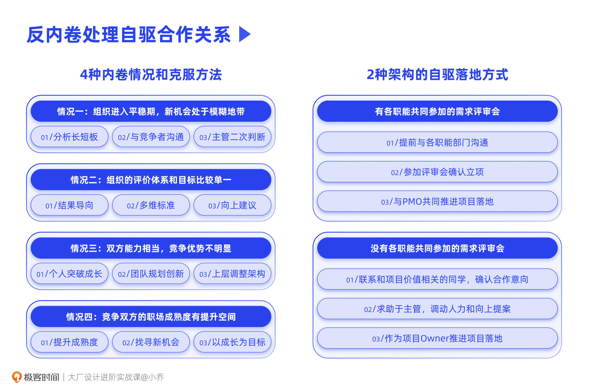

- 00 开篇词 升维思考，是设计师有效成长的第一步.md.html
- 01 业务周期：0-1-10-100-N的发展策略.md.html
- 02 商战模式：如何在商业竞争下突出重围？.md.html
- 03 市场洞察：如何找寻差异化撬动支点？.md.html
- 04 用户洞察：不懂用研的设计师不是好职场人.md.html
- 05 用户画像：是形式主义还是真的有效？.md.html
- 06 用户旅程：挖掘不同用户的核心机会点.md.html
- 07 职场晋升：看懂晋升的“游戏规则”.md.html
- 08 设计价值升级：五层进阶突破成长.md.html
- 09 基础价值 核心三原力：如何将需求转化为设计稿？.md.html
- 10 基础价值 第一性原理：从问题本质解决问题.md.html
- 11 基础价值 设计复盘：只是量化设计结果吗？.md.html
- 12 二级价值 负向网兜：如何全面发现负向问题？.md.html
- 13 二级价值 设计自驱：如何做好项目Owner？.md.html
- 14 二级价值 自驱合作：如何反内卷处理合作关系？.md.html
- 15 三级价值 增长误区：思维惯性陷阱和虚荣数据.md.html
- 16 三级价值 用户增长历程：AARRR是万能的吗？.md.html
- 17 三级价值 产品增长：如何做好产品创新？.md.html
- 18 三级价值 运营增长：如何自驱营销活动和投放？.md.html
- 19 三级价值 品牌增长 抢占心智，赢得人心红利.md.html
- 20 三级价值 增长实操：如何“步步为营”推动落地？.md.html
- 21 四级价值 L型赋能：让T型人才发挥更大价值.md.html
- 22 四级价值 “网状对比”解决共性痛点.md.html
- 23 五级价值 商业画布：设计师可以担任业务方吗？.md.html
- 24 五级价值 共创洞察：如何做好一次完善的workshop？.md.html
- 25 五级价值 领导力觉醒：写给新晋管理者.md.html
- 26 工作选择（上）：2B or 2C设计师？如何规划领域？.md.html
- 27 工作选择（下）：大厂 or 小厂？如何选择赛道？.md.html
- 28 人才地图：认知自我，成为高潜力人才.md.html
- 29 成长历程：如何从设计小白成长为团队负责人？.md.html
- 30 冰山模型：如何成为让面试官欣赏的“面霸”？.md.html
- 31 作品集指导：什么是面试官喜欢的作品集？.md.html
- 用户故事 什么是职场设计师进阶的正确姿势？.md.html
- 结束语 突破自我，成人达己.md.html
- 捐赠
14 二级价值 自驱合作：如何反内卷处理合作关系？
你好，我是小乔。
在实现二级价值的过程中，我们因为需要成长，因为突破了舒适圈，就会在自己不够游刃有余的地带感到一些不适、烦恼、焦虑、困难等等，这都是非常正常的事情。因为我们除了需要提升专业能力以外，还需要补足合作、项目推进等软实力。
你可以回忆一下，在仅仅是承接需求的阶段，你是不是还可以与合作方保持非常好的关系，获得业务方的好评？但当我们有一定的能力提升，开始自驱项目时，可能就会因为公司的架构或分工不明等情况，开始担心与其他职能或自己团队内的同学产生利益冲突，互相抢活，造成内卷，甚至与他人撕破脸。
其实，会发生内卷的同学，普遍都很上进，也有进取心。这也是主流互联网公司面试候选人的要求，希望候选人是主动自驱、打破边界的，而这也是我们的优势。但是有些时候，我们自身的职场成熟度还不够高，或者也会遇上个人利益心相对过重、集体意识不强、心态和格局不够宽广的同学。面对这样相对复杂的关系和珍贵的机会点，我们往往很难恰当处理好每一步的走向。
今天，我们就一起来探讨，当我们需要持续成长、发起自驱项目时，应该如何克服内卷。而在克服内卷之后，又要如何在不同的部门架构下，顺利与他人合作，推进自驱项目落地，取得共赢局面，真正收获设计师的二级价值。
当然，除了实现二级价值以外，自驱合作能力将贯穿于我们之后的每一份成长和每一级进阶中。
如何克服内卷？
首先我们来聊一聊内卷的定义和它产生的原因。
内卷，是一种个体付出更多努力，却很难获得实际增益的非理性竞争。在我们的日常工作中，主要是指同行之间竞相付出更多努力以争夺有限的资源，却导致个体“投资回报率”下降的现象。可以说，只要有利益差，那么这个现象不论是在大厂、小厂、狼性文化还是柔性文化的公司，就都会存在。并且我们会发现，在内卷过后，业务上往往也没有卷出真正的成果，更没有带来真正的增长。
相信没有人天生想要内卷，每个同学原本都想好好地与他人相处，互相学习，互惠互利，但为什么在职场环境中会事与愿违呢？其实，产生内卷的主要情况分为4种，我们分别来看一下应该如何突破这些状况。
情况一：组织进入平稳期，新机会处于模糊地带
当业务发展逐渐平缓，我们作为设计师，原本负责的领域已经没有那么多干不完的基建需要支持，就需要找寻新的机会点。而新的机会点往往处于边界模糊地带，要么是你动了我的奶酪，要么是我动了你的蛋糕。
那我们该如何处理边界模糊的项目呢？当我们发现其他同事或部门在做相似的项目时，可以先与对方友好沟通，讲清楚彼此的能力和优劣势，判断是否可以分工合作。当然在沟通之前，我们一定是有备而来的，需要提前准备好项目规划和彼此的优劣势分析。沟通完毕后，再将结论反馈给主管，让上层来二次判断这个项目更适合由谁来负责，是一起合作，还是单独由一方来负责。
以我自己的经历举例，我所在的大部门没有市场部，因此品牌市场的项目就变成了设计和运营的中间地带，而我和运营负责人都看得到这块蛋糕的重要性。因为我们的职场成熟度相对都较高，就先私下商量，分析彼此的优劣势，并达成了共识。我们将市场相关的项目拆分为品牌策略和市场渠道推广两部分，品牌策略的事项由设计部门负责，市场渠道推广的事项由运营部门负责。
在达成共识后，我和运营负责人就一起向我们共同的主管提出品牌市场的项目规划，并表达了分工合作，共同推进的想法。我们在得到认可后就一起发起了市场项目。这个项目由于凝聚了我们双方的能力，成功为业务带来了显著的增长。
因此，无论是个人之间产生内卷，还是设计部门和其他职能部门产生项目争抢，我们化解内卷的方式就是定位长短板，做自己更擅长的事情。我们作为设计师，要努力争取设计职能有发力优势，且对业务目标影响较大的项目。只有这样才能更好地产出设计价值，为设计团队争取到更大的话语权。
那么，什么是设计职能有发力优势的项目呢？比如说，得物App的AR项目、阿里的鲁班项目，都是很典型的设计自驱案例，项目负责人都是设计师。
为什么这两个项目会由设计团队负责，而不是技术或者产品呢？因为得物的AR试穿需要还原真实的极致体验，只有设计师可以看出模型的精致度，评判出AR的稳定性、贴合度、体验优势；而鲁班也是同理，不同分类素材的制作、图层组合方式、审美规范，都只有设计师可以把控到位。这两个案例都充分发挥了设计职能的优势，同时为业务带来了显著增长。
情况二：组织的评价体系和目标比较单一
除了新机会处于模糊地带的情况外，有些公司的评判标准或者主管个人的评价体系较为单一，也会造成内卷现象。比如，主管认为工作时长很重要，于是同学们就拼命加班。加班倒不是为了做好项目，而是在公司闲散摸鱼，一直熬到很晚才下班。这样就只是看起来非常认真，但实际产出对业务毫无价值。
此时，更有效的方式是，公司的评判标准以结果目标为导向，且有丰富多维的结果衡量手段。加班的时长只是次要维度，更重要的是同学们是否高质量完成了项目，是否带来了超出预期的业务结果。而丰富多维的结果衡量手段，除了业绩目标外，也可以衡量对团队的贡献、自驱能力、合作顺畅度等等，如果是主管，则可以评判TA对团队同学的培养提升能力、对团队业务的规划方向准确性等等。
以国内的大厂为例，阿里除了衡量KPI结果以外，也会考量同学们的潜力、价值观等等方面；字节跳动除了OKR以外，也会衡量字节范、领导力、投入度等等方面，且绩效并非只由直属leader决定，合作方、团队内的同学也会给出360度环评，使绩效更为客观、合理。
如果你所在的公司和部门还没有这样的管理制度，或者你的leader存在主观臆断和评价体系单一的情况，不如把更有效的方式推荐给TA。
情况三：双方能力相当，竞争优势不明显
会发生争抢的双方，不管是两个人在争抢，还是两个部门之间在争抢，往往是因为双方可发挥的能力差异不大，比如技能范畴、资源带宽、发展方向等方面都比较接近。在能力相当的情况下，双方就容易发生争抢。
如果是同一个团队的两个同学之间竞争，其实不用过于担心，通常主管是比较清楚大家的长短板的，可以帮助你们判断这个项目更适合由谁来负责。如果这个项目比较庞大，可以拆分项目，由两个同学分别负责不同的侧重点，同时充分配合，取得共赢。
同时，我们身为设计师，也需要培养自己的创新突破能力，使自己具备更强的竞争力，成为那个相对来说不可替代的角色。当你充分学会我们这套课程的调研分析方法和推导设计解法的逻辑链后，相信你也一定可以提升竞争力，游刃有余地找到发力点。
如果是两个团队或部门之间争抢项目，这其实并不是一件乐观的事情，会发生大家常说的“重复造轮子”现象，好几个团队或部门做同样的事，造成人才资源的浪费。在2021年，有大厂曾经在同一天对外发布了两个几乎一样的产品，造成了不良的公关影响。
处于二级价值成长阶段的你，也许现在还不是部门负责人，但也同样需要具备上层思维。当遇到多团队内卷时，作为部门负责人，就需要跳出固有思维，规划创新能力，根据新的发展方向调整团队人才分布。这其实和我们提升个人竞争力同理，团队也需要提升团队的竞争力。
如果两个团队的能力和方向都比较接近，就会造成这两个团队之间的矛盾，比如大家熟知的“饿了么”和“口碑”两个团队之间的相爱相杀。此时，为了部门和团队更加健康地发展，上层会进行架构调整，拆分或合并这两个团队，将不必要的人力淘汰，将留下来的人力统一为一个部门。
架构调整在大厂是非常常见的事情，业务规划和人才密度数量是相互匹配的。随着产品阶段的发展，上层需要阶段性调整架构，否则就会出现重复造轮子的问题。我们作为部门的一员，需要提升自己的韧性，在多变的环境下及时适应，在一团乱麻下理清线头，重新发力。
情况四：竞争双方的职场成熟度有提升空间
也许有的同学已经具备比较好的沟通合作能力，也比其他同学有明显的竞争优势，所在的公司和主管也有科学的评判方式，但还是会遇到内卷和争抢项目的情况。这往往是因为你或者竞争对手的职场成熟度不够高。我的建议是不要钻牛角尖，与其耗费精力，不如去找寻更好的项目方向。
我曾经也遇到过类似的经历。我优先提出了一个项目规划，并且这个项目很适合我团队中的一个同学负责。然而我们却在推动落地的过程中，遇到了想要硬抢项目的同学，理由是这个项目和她团队的领域也有相关性。由于那位同学是老员工，主管也搞不定，最后为了避免主管为难，我主动放弃了这个项目。
我的观点是，毕竟这只是一份工作，成长才是最重要的。我可以去寻找新的机会点，来培养我团队的同学，没有必要为此撕破脸。在职场中，薪资、绩效，都不一定是最主要的追求，或者说，这些都是顺带的结果，而成长了多少才是我们最应该关注的核心收入。
我很清楚自己可以找到其他机会点，因为机会点是永远找不完的，只是以你的能力是否可以找到而已。最后我和我团队的那位同学都收获了成长，也获得了满意的绩效。
我的建议是，不管职场中的竞争有多激烈，都要提醒自己不要陷入无意义的内卷。成长才是第一要素，我们的眼光不应该停留在这一份工作中，更不应该停留在某一个项目中。我们不去抢别人的项目，完全可以靠实力找到更好的项目。发自己的光，也不灭别人的灯。
如何跨职能合作，推动自驱项目？
当我们了解了内卷的四种原因，并可以有效解决后，我们就可以规划项目，推动项目落地了。
我们在上节课中讲到，当我们完成了整个项目的规划，可以讲清楚项目目标和指标价值，可以预估大致的成本和ROI时，基本这个项目对我们来说已经胸有成竹，就差落地了。这个过程要么非常顺利，要么很考验盘资源的能力，这取决于公司的合作机制。
情况一：有需求评审会机制
我们可以先看第一种情况。如果公司或部门有正规的需求评审会，各职能的同学都可以提出自己的需求，你可以在评审列表中添加自己的项目规划，并在评审会上进行宣讲。通常中小企业或者大厂内相对较小的独立业务部门，都会采用这样的评审机制。我们曾经讲过业务周期，在业务处于引入期和成长期，往往也会以需求评审会机制进行运作。
在宣讲之前，也建议你先和相关领域的负责人提前打好招呼，讲清项目价值、预估需要的人力支持和支持时长。在沟通的过程中，你同时也可以收集到大家的建议，进一步优化自己的项目规划，这样后续的评审过程也会更加顺利。
当评审通过后，恭喜你，已经度过了作为项目Owner最困难的部分，之后的事项都是小菜一碟。公司会配备相应的PMO，与你共同把控项目进度，确保项目的顺利上线。
情况二：没有需求评审会机制
还有一种情况，那就是公司或部门没有各职能共同参加的评审会，都是由上层决策需求，当给到一线的产品经理和设计师时，已经是确认好的需求方向了，此时大家可以做的更多是执行工作。这样的机制通常发生在架构庞大、人员分工很细的部门，或者处于成熟期的业务。
如果我们有自驱项目的想法，就需要自下而上推动项目了。这在许多大厂，都是非常普遍的情况。
建议你先靠自己的游说能力，拉拢和这个项目价值有关的同学。国内企业的大部分同学都是积极主动的，也期待突破和成长，如果这个项目可以为TA带来价值，通常在时间允许的情况下都是愿意共同合作的。
如果实在没有拉拢到你的“合伙人”，可以求助于主管，借助TA的资源和话语权调动人力，也可以借助TA的能力向上提案，前提是管理者自己有话语权。这也是为什么跟着优秀的主管，能力和眼界的成长都是事半功倍的。
我鼓励大家尽量靠自己的能力搞定，因为这会让你的主管刮目相看。同时，这也说明你的能力已经可以独立撑起一片天了。主管期待的核心骨干，是一个可以在工作中撑住TA的下属。
今日小结
今天，我们一起探讨了在职场中造成内卷的4种情况，并学习了如何破解内卷。
第一种，当新机会处于模糊地带时，我们可以与竞争者分析彼此的长短板，并合理分工合作；
第二种，组织的评价体系和目标单一，我们可以参考行业内的头部大厂，采用以结果为导向的多维评判方式；
第三种，竞争双方能力相当，竞争优势不明显，无论是彼此竞争的个体还是相互竞争的团队，都需要突破创新，提升竞争力；
第四种，当遇到职场成熟度不高的竞争者，我们要避免陷入无意义的内耗中，主动寻找新的发力方向，因为成长才是工作给予我们的最大收获。
在顺利破解内卷后，我们一起探讨了如何推动自驱项目落地，如何立项和拉拢合作资源。当公司或部门内有需求评审会时，我们只需要根据上节课学习的内容，确保项目规划的价值和合理性，提前与其他职能团队沟通好，就可以顺利通过评审，成功立项；当公司或部门内没有这样的评审会时，我们需要自下而上推动项目，拉拢价值利益相关的同学，组成虚拟小组，共同推进项目落地，取得共赢。

互动时刻
回顾你过往的工作，是否曾经与团队内部的同学相互内卷？是否曾经在发起自驱项目时，被认为抢了运营、产品或者其他职能的活呢？你是如何解决问题的呢？
欢迎把你的经历和思考在留言区分享出来，与我和其他同学一起探讨。我们建了一个读者交流群，欢迎你的加入，和其他同学一起成长！如果你觉得有所收获，也欢迎把文章分享给你的朋友一起学习。我们下节课见。
© 2019 - 2023 Liangliang Lee. Powered by gin and hexo-theme-book.